教学痛点与破局思路
两种表述 · 逆卡诺循环
循环 · 测量 · 智控三系统
四类热力图实时渲染
从定性观察到定量验证
可视化 · 定量化 · 智能化
结论与研究方向延伸
热力学第二定律是热工核心理论，但现有实验条件难以支撑定量教学 —— 来源：PW Consulting《2025 热工教学设备调研报告》
能量转换与热传递的「方向性」看不见摸不着，学生只能靠公式想象熵增过程。
海外高校现有制冷实验台价格昂贵，普通教学实验室难以批量配置。
缺少实时热力曲线生成能力，无法对热量逆向传递规律做定量展示与分析。
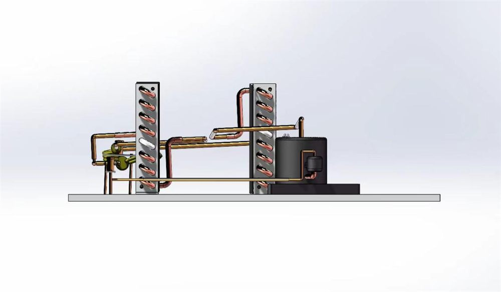
冷凝器吹热风、蒸发器吹冷风，热量逆向传递全程可感知。
温度、压力、电压、电流一次接入，实时生成热力曲线。
以熵流与 COP 计算量化呈现第二定律，整机成本可控。
理想热机由两个等温、两个绝热过程组成，效率只取决于两热源温差。
温差产生电动势，验证热能 ↔ 电能转换的方向性。
微粒无序运动直观支持熵增原理。
物质自发从高浓度向低浓度扩散，直至平衡。
消耗外功实现热量「由低到高」的非自然传递 —— 最贴近工程实际的第二定律载体。
本装置选择 · 综合设计压缩机消耗功 W，驱动工质把热量 Q₀ 从低温热源「搬」到高温热源并放出 QK —— 逆向传热必须以外功为代价。
压缩机 · 蒸发器 · 冷凝器 · 干燥过滤器 · 毛细管 · 卡诺管，构成真实制冷回路。
热电阻温度传感器（8 测点）＋ 数字远传压力表 ＋ 电压/电流表，全状态感知。
PLC 可编程控制器 ＋ 触摸屏，Modbus RTU 组网，数据直达屏幕。
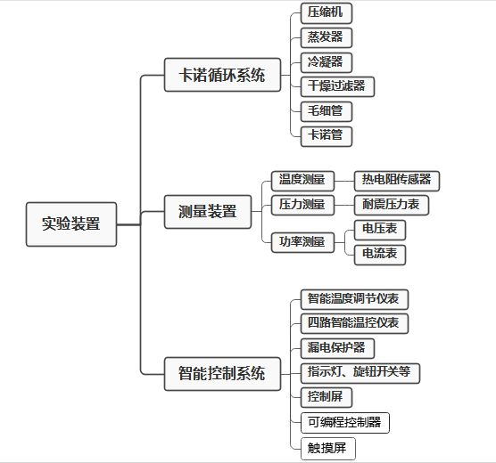
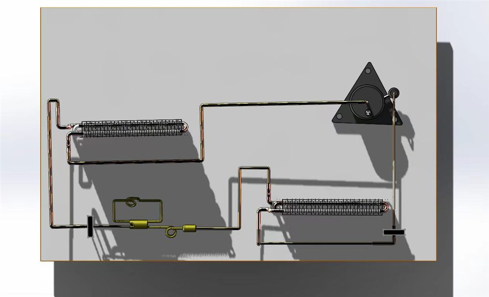
高压侧冷凝放热、低压侧蒸发吸热，节流前后压差清晰可测 —— 循环四状态全部落在量程内，专为教学观测设计。
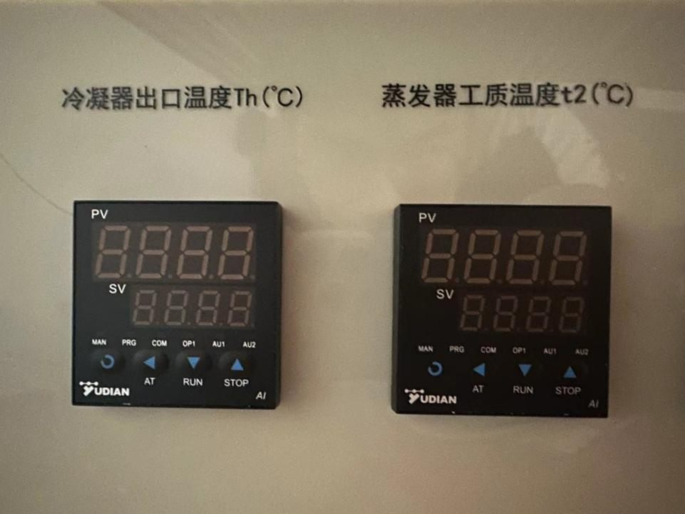
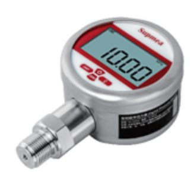
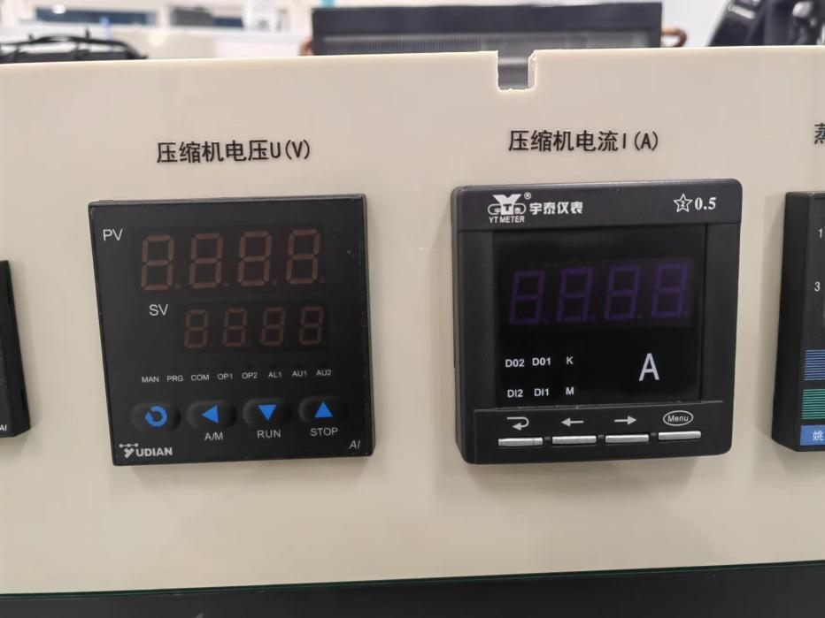
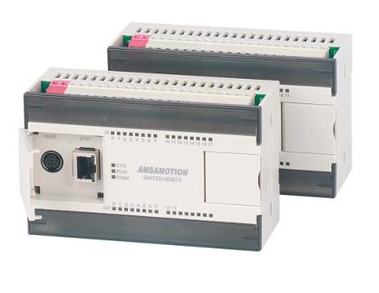
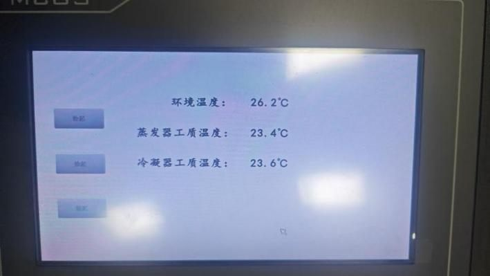
自主开发浏览器端可视化系统：采集 → 计算 → 渲染 → 联动，四环节同一循环驱动
MC 协议读取 D 寄存器，本机 HTTP 推送；无 PLC 时自动切模拟源，支持离线演示。
由实测高/低压反推四个状态点，计算 COP、熵流等衍生量（R22 物性插值）。
数据域 → 归一化 → 视窗 → 像素，逐级解耦，兼容线性/对数坐标轴。
图表与 Excel 导出由同一采集循环驱动，历史缓冲随开随现。
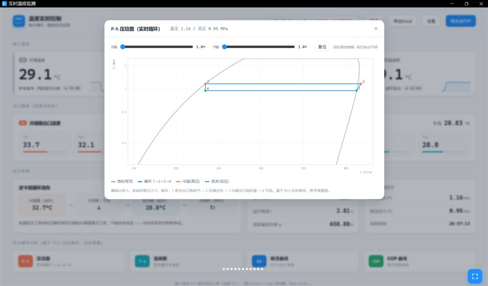
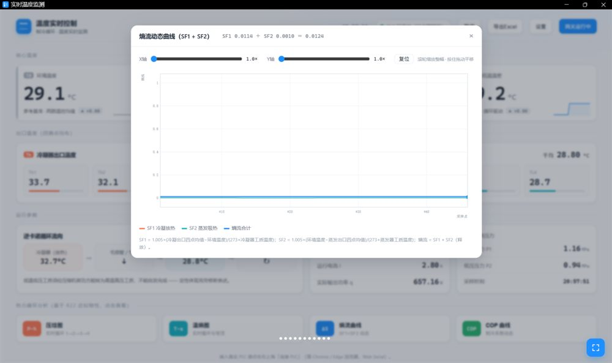
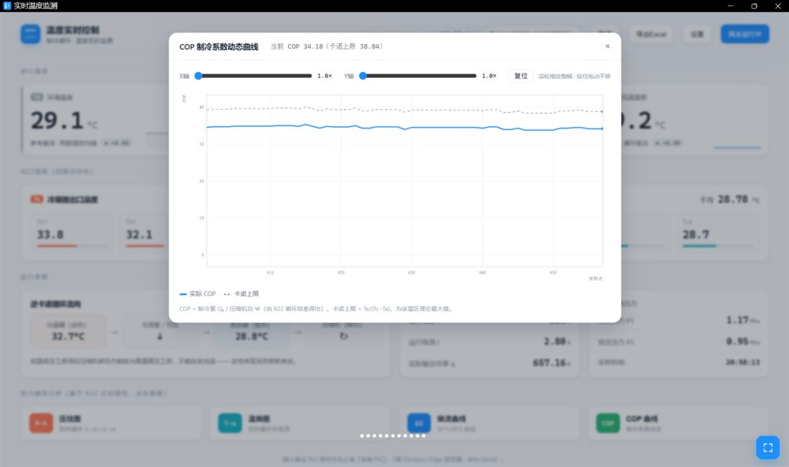
理解克劳修斯表述
编制数据记录表
闭合漏电保护器
仪表无断码 · 温差 ≤2℃
冷凝器出热风 · 蒸发器出冷风
定性感知逆向传热
运行约 5 min 参数稳定
记录温度/压力/电压电流
熵变与 COP 计算
对照卡诺上限验证
先关系统开关再断电
清理实验台
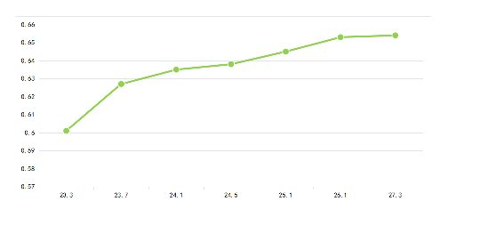
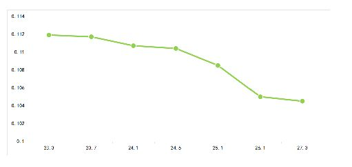
实物 + 数据双通道：热风/冷风可触摸感知，P-h、T-s、熵流、COP 四图实时循迹，抽象定律看得见。
基于熵增原理与㶲分析，以状态参数计算严格验证克劳修斯表述，给出相对误差与不确定度。
仪表经 Modbus RTU 接入自主编程 PLC，全部数据直达触摸屏，采集-显示-导出全流程自动化。